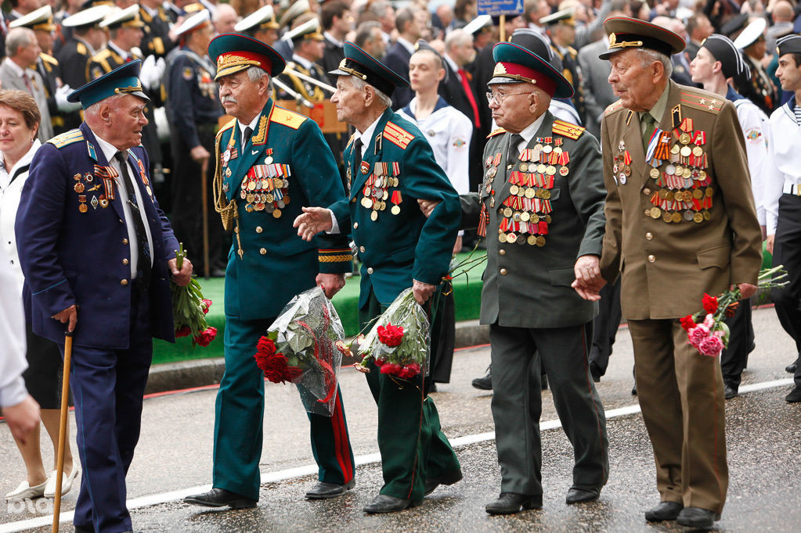

День победы
День Побе́ды — праздник победы Красной армии и советского народа над нацистской Германией в Великой Отечественной войне 1941—1945 годов. Установлен Указом Президиума Верховного Совета СССР от 8 мая 1945 года[2] и ежегодно отмечается 9 мая. В 1945—1947 годах и с 1965 года День Победы — нерабочий праздничный день[3].
9 мая является одним из дней воинской славы России.
В День Победы во многих городах России проводятся военные парады и праздничные салюты, в Москве производится организованное шествие к Могиле Неизвестного Солдата с церемонией возложения венков, в крупных городах — праздничные шествия и фейерверки.

9 мая — День Победы в войне над фашистской Германией — является в России, бывших советских республиках и многих странах Европы одним из самых важных, трогательных и славных праздников.
9 мая 1945 года завершилась Великая Отечественная война, являющаяся составной частью Второй мировой войны 1939-1945 годов. Она началась на рассвете 22 июня 1941 года, когда фашистская Германия, нарушив советско-германские договоры 1939 года, напала на Советский Союз. Война длилась почти четыре года и стала самым крупным вооруженным столкновением в истории человечества. На фронте, простиравшемся от Баренцева до Черного морей, с обеих сторон в различные периоды войны одновременно сражались от 8 миллионов до 13 миллионов человек, применялось от 6 тысяч до 20 тысяч танков и штурмовых орудий, от 85 тысяч до 165 тысяч орудий и минометов, от 7 тысяч до 19 тысяч самолетов.
9 мая 1945 года на Центральный аэродром имени Фрунзе приземлился самолет «Ли-2» с экипажем А.И. Семенкова, доставивший в Москву акт о капитуляции фашистской Германии. А 24 июня на Красной площади в Москве состоялся Парад Победы. Командовал парадом маршал Константин Рокоссовский, принимал парад — маршал Георгий Жуков.
На параде торжественным маршем прошли сводные полки действовавших в конце войны фронтов. Впереди шли командующие фронтами и армиями, Герои Советского Союза несли знамена прославленных частей и соединений. Парад завершился маршем 200 знаменосцев, бросавших знамена побежденных немецких войск на помост у подножия Мавзолея.
День Великой Победы советского народа — символ непоколебимого духа и героизма. Ради мира на Земле сложили свои головы на алтарь Отечества более 27 миллионов советских людей.

Этот праздник символизирует освобождение мира от тирании нацизма и фашизма. Вторая Мировая война - это решение судьбы всей человеческой цивилизации. Не случись победы на Гитлеровским режимом, мир был бы совсем другой. И в этом мире точно не было бы ни Вас, задавшего этот вопрос, ни меня, на него отвечающего, ни вас, тех, кто сейчас читает этот ответ.
Эта победа и этот праздник великие оттого, что мы можем задуматься: "А ради чего наши предки с оружием в руках, на заводах в тылу, в партизанских отрядах отстаивали наше право жить так, как мы хотим? Как мы живем и куда идем?" Этот праздник великий оттого, что действительно объединяет всех нас, нет в России семьи, которая не была бы затронута этой страшной войной.
9 мая люди выходят на Парад Победы и шествие Бессмертного Полка. Повсюду видны знамена и флажки, пилотки и гимнастерки, штендеры с портретами героев Великой Отечественной войны, броши, значки, открытки, гвоздики и черно-оранжевые ленточки. В уже светлеющем майском небе вечером расцветает салют. Конечно, важнее то, что мы чувствуем в этот день, а не внешняя атрибутика. Но человека ежедневно поглощают дела, заботы, и не всегда в этой круговерти люди помнят о главном и важном. А с помощью предметов с символикой Дня Победы мы можем настроиться на нужный лад и прочувствовать атмосферу светлого и печального праздника.
Празднование Победы сочетает в себе советские и современные традиции. В этот день принято в первую очередь поздравлять ветеранов и дарить им цветы, в частности красные гвоздики. Также обязательным является проведение Парада Победы. Ежегодно его начали организовывать только с 1995 г. Самый главный и масштабный парад проходит в Москве на Красной площади.В его программу входит демонстрация военной мощи страны, поздравительная речь президента, шествие военных, учащихся военных вузов, представления. Также происходит возложение цветов и венков к Могиле Неизвестного Солдата, памятникам воинской славы. Завершается парад праздничным салютом.
Выбор 9 мая в качестве даты праздника не случайный. Он связан с днем подписания акта о капитуляции Германии. Военные действия на территории Европы завершились 7 мая 1945. Во французском городе Реймс собрались генерал Йодль со стороны Германии, американский генерал Уолтер Смит и генерал-майор Иван Суслопаров, который руководил советской разведкой в Западной Европе. Получается, что Суслопаров должен был подписать акт от имени СССР. Но он понимал, что эту миссию должен выполнить кто-то другой – военное лицо более высокого ранга. Тогда Суслопаров отправил текст акта в Москву и стал ожидать ответа от Верховного Главнокомандующего. Однако к моменту официального подписания документа ответа все еще не было. Суслопаров взял ответственность на себя и поставил подпись. Для него это была сложная ситуация. С одной стороны, его действия в Москве могли принять за превышение полномочий. С другой стороны, если бы СССР не подписал акт, Германия могла бы продолжить войну.